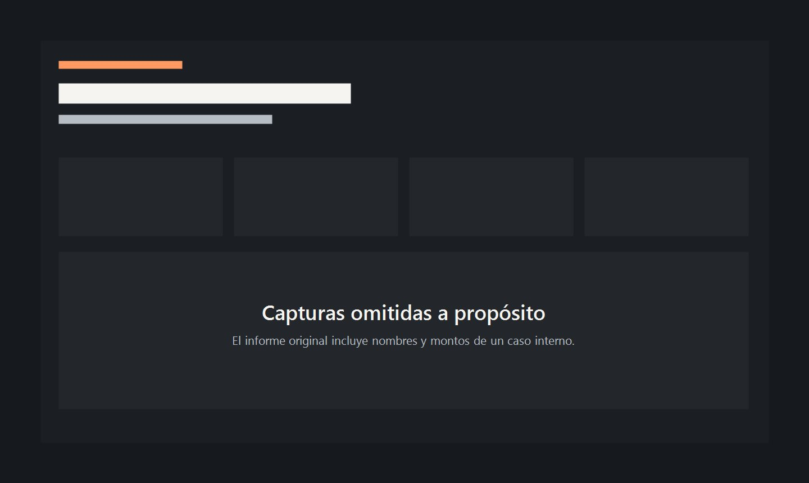

Soy Lautaro Núñez, desarrollador full stack y Licenciado en Ciberseguridad, en Córdoba. Hago sitios, tiendas y sistemas para negocios, y reviso los de otras empresas para encontrar las fallas antes que un atacante.
Pasá el cursor por el plano para ver lo que encuentra una auditoría.
El sitio no usa https.
El panel acepta usuario admin y clave admin.
Un complemento no se actualiza desde 2019.
La copia de seguridad se puede descargar desde internet.
Trabajos
Catorce proyectos entre sitios, tiendas, sistemas y propuestas. Abrí cualquiera para ver capturas y videos.
Cliente
The Happy Ride Tulum
Qué resolví
Pedir un scooter, ATV o e-bike en cuatro pasos, en español o inglés, y recibir un código de seguimiento.
Hecho con
HTML, CSS, JavaScript y un panel propio
Una web en español e inglés para explorar vehículos, elegir fechas y enviar una solicitud de reserva. El cliente recibe un código de seguimiento y el negocio confirma por WhatsApp.
Una novela en vivo donde el público vota y decide el próximo capítulo.
Hecho con
Next.js, Prisma, PostgreSQL y Socket.io
Una plataforma de novela interactiva en vivo. El público sigue la transmisión, vota en tiempo real y el resultado define el próximo capítulo. Tiene casting, cuentas de usuario y votaciones sincronizadas por WebSockets.
Por ahora este proyecto no tiene capturas públicas.
Cliente
Grupo Stelle, AgroStock
Qué resolví
Pedidos de agroquímicos por litro y un panel privado de stock, ventas y pedidos.
Hecho con
Node.js, Express y JavaScript
Una herramienta para elegir productos, indicar los litros y armar un pedido. El depósito tiene un panel privado para controlar stock, ventas y solicitudes.
Índice de láminas
Cliente
Rubro
Qué resolví
Hecho con
Acciones
Joyería Acacio
Joyería
Vidriera de joyas con consulta por pieza y un panel de ventas para el local.
PHP, MySQL, JS
Una tienda que presenta las joyas con fotos y detalles para facilitar la consulta. El negocio carga su catálogo y vende desde un panel de punto de venta.
Plantas artificiales ordenadas por ambiente para hogares, locales y oficinas.
HTML, CSS, JS
Un catálogo visual que ordena las propuestas por categoría y lleva al visitante de la inspiración a la consulta.
Alimentos en Regla
Consultoría
RNE, RNPA y rótulos explicados claro, con una consulta guiada.
Next.js, Tailwind
La web de la Lic. Karina Fernández: servicios de asesoramiento alimentario, preguntas frecuentes y un formulario que guía la primera consulta.
Holística
Formación
Tres diseños de portada y un panel para que la clienta edite todo sola.
PHP, JSON
Un sitio para la formación en Mesa Energética Holística, con tres portadas a elegir y un panel para cambiar textos e imágenes sin depender de un programador.
Departamento Capri
Administración
Gastos y préstamos ordenados, con una vista para cada propietario.
HTML, CSS, JS
Un informe con gastos, préstamos y totales, y una vista por persona. La imagen es ilustrativa para cuidar los datos privados.

Tiro Federal Córdoba
Institución deportiva
Propuesta por etapas: sitio institucional, armería con catálogo y soporte.
HTML, CSS
Una presentación navegable con la propuesta por etapas para el club: sitio institucional, armería digital con catálogo y atención por WhatsApp.
Reviso empresas como lo haría alguien que quiere entrar.
Soy Licenciado en Ciberseguridad y me especializo en cibercrimen. Con una autorización firmada, pruebo los sitios, servidores y redes de una empresa para encontrar las fallas antes que un atacante. Después las corregimos juntos, y si el sistema es viejo, lo modernizo por etapas sin frenar el trabajo de todos los días.
Pruebas de intrusión
Ataques controlados sobre webs, redes y aplicaciones, con el alcance acordado por escrito.
Endurecimiento
Permisos, cifrado, doble factor, copias de seguridad y monitoreo en servidores y paneles.
Modernización
Paso sistemas antiguos a una base actual, de a partes y sin perder datos.
Incidentes
Si ya pasó algo, investigo qué ocurrió y preservo la evidencia digital.
Personas
Simulacros de phishing y charlas para que el equipo también sea una barrera.
Informe de auditoría
Empresa de ejemplo. Los datos son ficticios.
Revisó: Lautaro Núñez
Hallazgo
Riesgo
Copias de seguridad descargables desde internet
Crítico
Panel con usuario y clave de fábrica
Alto
Gestor de contenidos sin actualizar desde 2019
Alto
Formulario sin protección contra envíos automáticos
Medio
Certificado vencido en un subdominio
Medio
esto lo ve cualquiera desde el navegador
arreglar primero
Corregido
Cómo trabajamos
Seis pasos, de la primera charla al día que lo usás solo.
Charla
Me contás cómo trabaja tu negocio y qué te está frenando.
Plano
Te muestro la estructura y el diseño antes de escribir código.
Construcción
Programo el sitio o el sistema, y ves los avances mientras tanto.
Pruebas
Lo pruebo en celular y computadora, y le hago una revisión de seguridad.
Publicación
Lo pongo online con dominio, certificado y copias de seguridad.
Seguimiento
Te enseño a usarlo y sigo disponible para cambios.
Lista de materiales
Trabajo todas las capas de un proyecto. Elijo con qué según lo que haga falta, no según la moda.
Lo que ve tu cliente
HTML, CSS, JavaScript, TypeScript, React, Next.js y Tailwind
La lógica
Node.js, Express, PHP, APIs REST y Socket.io para tiempo real
Los datos
PostgreSQL, MySQL, MariaDB y Prisma
Dónde vive
Linux, Git y GitHub, Hostinger, cPanel, DNS y certificados SSL
La seguridad
Kali Linux, Burp Suite, Nmap, Wireshark, Metasploit y OWASP ZAP
Negocios para los que trabajé
The Happy Ride Tulum
Dar Automotores
Joyería Acacio
AbSA Perfumes
SmartGPS
AuraLV Store
Selvora Deco
Grupo Stelle
NextScene
Alimentos en Regla
Holística
OS TigerLab
Tiro Federal Córdoba
Departamento Capri
Sobre mí
Hace más de seis años que hago sitios y sistemas para negocios. Hoy armo proyectos completos: la parte que ve el cliente, la que procesa los pedidos y el servidor donde todo vive.
Además soy Licenciado en Ciberseguridad y trabajo del lado ofensivo. Esa mirada cambia cómo construyo: cada cosa que entrego ya pasó por la pregunta de cómo la atacaría alguien.